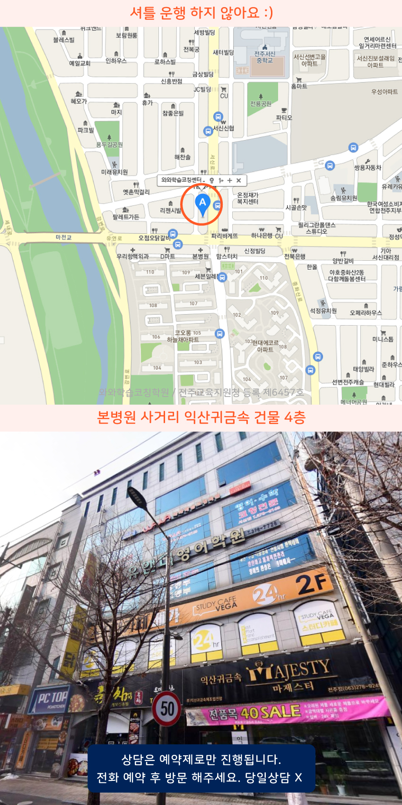

Area
서신동 관리형학원
서신동에서 학원을 찾는다면 시간표와 수업 방식부터 차분히 확인해보세요. 중화산동에서는 상담 때 등하교 이동 시간과 대기 환경도 함께 체크하면 좋아요. 효자동에서는 현재 수준을 먼저 점검하고 단계별 학습 계획을 안내하는 곳이 도움이 됩니다. 서부신시가지에서는 소수 정원 운영과 개별 피드백이 실제로 어떻게 이뤄지는지 살펴보세요.
Area
서신동에서 학원을 찾는다면 시간표와 수업 방식부터 차분히 확인해보세요. 중화산동에서는 상담 때 등하교 이동 시간과 대기 환경도 함께 체크하면 좋아요. 효자동에서는 현재 수준을 먼저 점검하고 단계별 학습 계획을 안내하는 곳이 도움이 됩니다. 서부신시가지에서는 소수 정원 운영과 개별 피드백이 실제로 어떻게 이뤄지는지 살펴보세요.
Schools
서신동 서신중 학생과 서문초 상위연계 준비반은 내신 대비를 위해 국영수 핵심개념과 문제풀이를 소수로 점검하며 담임식 피드백으로 약점을 줄여갑니다.
Academy
전주 서신동에서 관리형학원을 찾는 학부모 상담을 하다 보면, “성적이 오르다 멈췄다”는 이야기가 자주 나옵니다. 보통은 시험 직전만 바꾸려는 경우가 많고, 평소에는 무엇을 틀렸는지와 왜 틀렸는지가 누적되지 않아 비슷한 문제에서 다시 같은 실수를 하게 됩니다. 특히 전주 서신동의 소수학원에서는 같은 수업이라도 이해의 속도와 오답 원인이 달라서, 학생별로 확인 주기를 다르게 가져가는 방식이 도움이 됩니다.
시험 전 4주 정도부터는 과목별 학습 순서를 고정하는 게 중요해요. 전주 중화산동의 서신초·서문초 학생은 개념을 먼저 정리하고, 단원별로 짧게 점검하는 흐름이 필요합니다. 전주 효자동이나 서부신시가지에서는 중등 과정으로 넘어오며 서술형과 과정 평가 비중이 커지는데, 우림중·서곡중·서전주중·전주서중·서부신시가지의 서곡중, 그리고 전주사대부고나 한일고를 준비하는 학생들 모두 “문제 풀이가 끝난 뒤”에 오답을 다시 풀어보게 해야 실력이 정착됩니다.
시험 1~2주 전에는 계획표가 있어도 실행이 흔들리기 쉽습니다. 그래서 전날 공부한 내용이 다음날까지 연결되도록 복습 체크를 분명히 하고, 시간 배분도 난이도에 맞춰 조정합니다. 호남제일고·기전여고·근영여고·영생고·호제고, 그리고 동암고·전일고처럼 상급 학업 목표가 있는 학생은 기출을 풀기만 하는 게 아니라, 출제 포인트가 어디에서 갈리는지 문장으로 요약하게 하면 약점이 좁혀집니다.
학원 선택을 고민할 때는 수업 시간만 보지 말고 기준을 확인해보세요. 서신중처럼 중등 과정의 변화가 큰 학교에 맞춰 진단-지도-점검이 이어지는지, 서천초 한들초처럼 초등에서 기본기가 흔들리지 않게 관리하는지, 기전여고 같은 고교 준비 단계에서 오답 정리와 복습 주기가 실제로 운영되는지 살펴보는 것이 성적을 움직이는 핵심입니다.

Programs


학교 진도에 맞춰 주요 어휘와 문법을 익히고 배운 내용을 독해 문제에 적용하는 연습을 합니다. 시험에 자주 등장하는 유형과 서술형까지 함께 대비하며 학년별로 필요한 영어 기본기를 쌓아갑니다.
계산 과정과 개념 이해도를 확인해 학생이 자주 막히는 부분을 찾아 보완합니다. 기본 유형을 충분히 익힌 뒤 다양한 문제에 적용하는 연습을 이어가며 정확한 풀이 과정과 문제 해결력을 함께 높입니다.
교과서와 다양한 지문을 활용해 내용을 정확히 이해하고 중요한 정보를 구분하는 연습을 합니다. 작품 해석과 독서 문제, 문법 학습을 고르게 진행하며 학교 시험과 수행평가에 필요한 국어 역량을 준비합니다.
한 수업 안에서도 학생마다 필요한 학습 내용을 구분해 각자의 속도에 맞춰 지도합니다. 수업 참여도와 문제 풀이 과정을 세밀하게 살피고 부족한 부분은 바로 피드백하여 학습 공백이 생기지 않도록 관리합니다.
Map

APPLY
순차적으로 연락드려 예약 도와드립니다.
Guide
영어는 어휘와 문법, 독해를 연결해 학습하고 수학은 개념 이해와 유형별 문제 풀이를 중심으로 진행합니다. 국어는 문학·독서·문법 등 영역별 학습을 통해 학교 수업과 시험에 필요한 기본기를 차근차근 다집니다.
학생마다 이해하는 속도와 어려워하는 부분이 다르기 때문에 진도를 동일하게 맞추기보다 학습 상태에 따라 조절합니다. 충분한 반복이 필요한 부분은 다시 학습하고, 이해가 완료된 내용은 다음 단계로 확장해 나갑니다.
현재 성적과 학습 습관, 과목별 강점과 취약점을 함께 살펴봅니다. 이를 바탕으로 우선적으로 보완해야 할 부분과 앞으로의 학습 목표를 정하고 학생에게 적합한 수업 및 관리 방향을 안내합니다.
| 횟수 | 초등 | 중등 | 고등 |
|---|---|---|---|
| 주 5회 | 339,000원 | 336,000원 | 419,000원 |
| 주 4회 | 279,000원 | 301,000원 | 344,000원 |
| 주 3회 | 219,000원 | 236,000원 | - |
| 횟수 | 초등 | 중등 | 고등 |
|---|---|---|---|
| 주 5회 | 389,000원 | 416,000원 | 469,000원 |
| 주 4회 | 319,000원 | 341,000원 | 384,000원 |
| 주 3회 | 249,000원 | 266,000원 | - |
학년, 과목, 수업 시수, 지역에 따라 수업료가 달라질 수 있습니다.